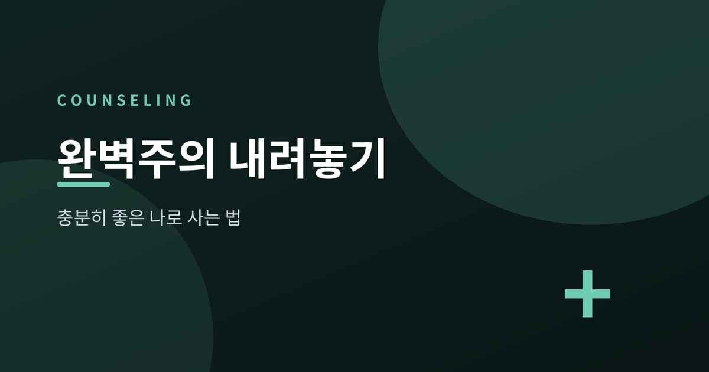
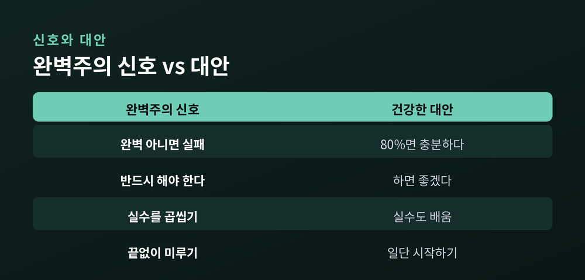
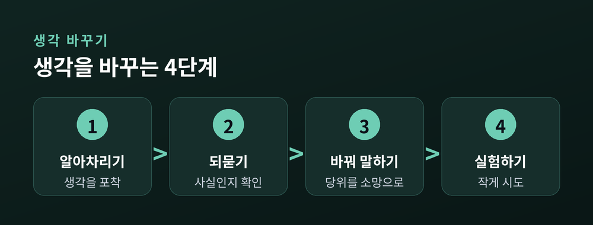
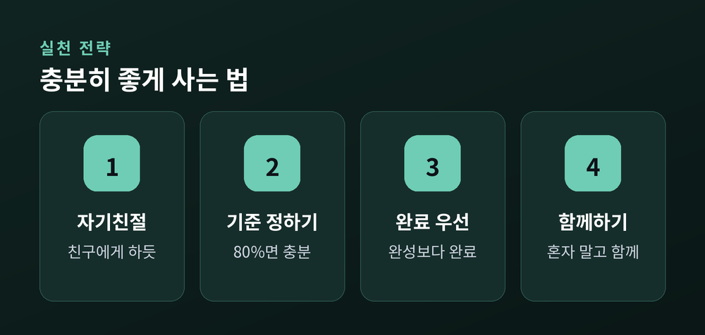

'충분히 좋은 나'로 사는 법

완벽하게 해내지 못하면 아무것도 아닌 것처럼 느껴질 때가 있습니다. 애쓰는데도 왜 자꾸 자신을 몰아세우게 되는지 궁금하셨던 분들을 위해 준비했습니다. 이번 글에서는 완벽주의가 마음을 어떻게 짓누르는지, 그리고 '충분히 좋은 나'로 사는 길을 정리해 보겠습니다.
높은 기준을 세우고 노력하는 일 자체가 병은 아닙니다. 심리학은 완벽주의를 두 갈래로 봅니다.
적응적 완벽주의는 높지만 현실적인 기준을 세웁니다. 실수를 견디고, 노력 끝의 성취에서 만족을 얻습니다. 실패하면 잠시 아쉬워하되 곧 다음으로 나아갑니다. 연구에 따르면 이런 사람은 오히려 스트레스와 우울, 불안 수준이 더 낮습니다.
부적응적 완벽주의는 결이 다릅니다. 기준이 비현실적이고, 조금의 흠도 실패로 받아들입니다. 성공은 당연한 것으로 깎아내리고, 실수만 확대해 곱씹습니다. 예전 심리학이 완벽주의를 뭉뚱그려 봤다면, 지금은 이 둘을 나눠 봅니다. 문제는 기준의 높이가 아니라, 실수를 대하는 태도와 자기비판의 강도입니다.
완벽주의는 세 방향으로 작동합니다. 스스로에게 완벽을 요구하는 자기지향, 타인에게 완벽을 바라는 타인지향, 그리고 '남들이 내게 완벽을 요구한다'고 느끼는 사회부과입니다. 이 가운데 사회부과 완벽주의가 불안과 정서적 소진에 가장 깊이 얽혀 있습니다.
역설도 있습니다. 완벽하게 하려다 오히려 미룹니다. 완벽하게 시작할 자신이 없어 미루고, 미룬 자신을 다시 나무랍니다. 실수에 대한 두려움과 자기비판이 겹치면 수면 문제와 피로, 번아웃으로 이어지기 쉽습니다.
이 부담은 개인만의 것이 아닙니다. 한 대규모 연구는 1989년부터 2016년까지 젊은 세대의 사회부과 완벽주의가 약 33% 늘었다고 보고했습니다. 성격의 문제라기보다 시대의 압력이기도 한 셈입니다.

부적응적 완벽주의의 밑바닥에는 몇 가지 생각의 습관이 있습니다. 하나는 이분법적 사고입니다. '완벽하지 않으면 곧 실패'라는 흑백 논리입니다. 다른 하나는 당위적 사고입니다. '반드시 이래야 한다'는 규칙이 삶을 지배합니다. 이 말에는 '못 하면 나쁜 사람'이라는 판단이 숨어 있습니다.
인지행동적 접근은 이 습관을 조금씩 흔듭니다. 먼저 떠오른 생각을 알아차립니다. 그다음 그것이 정말 사실인지 되묻습니다. '이 일을 80%만 해도 괜찮은가?'처럼 스스로 물어보는 것입니다.
말버릇도 바꿔 봅니다. '반드시 해야 한다'를 '하면 좋겠다'로 옮겨 말합니다. 작은 불완전을 일부러 남겨 두고, 실제로 무슨 일이 일어나는지 지켜보는 것도 좋은 방법입니다. 대개 상상했던 파국은 오지 않습니다.

정신분석가 위니컷은 '충분히 좋은 엄마'라는 말을 남겼습니다. 완벽한 부모가 아니라, 충분히 응답하고 때로 부족한 부모가 오히려 아이를 건강하게 키운다는 뜻입니다. 이 말은 우리 자신에게도 향합니다. 완벽하지 않아도, 우리는 이미 충분히 좋습니다.
완벽주의의 해독제로 심리학이 자주 꼽는 것은 자기연민입니다. 자기연민에는 세 요소가 있습니다. 자신을 다그치는 대신 다정하게 대하는 자기친절, '나만 이런 게 아니다'라는 보편적 인간성, 그리고 감정을 억누르지도 부풀리지도 않고 바라보는 마음챙김입니다.
한 가지 오해를 풀어야 합니다. 자기연민은 기준을 낮추는 일이 아닙니다. 자기연민이 높은 사람도 목표는 똑같이 높게 잡습니다. 다만 이르지 못했을 때 자신을 덜 벌합니다. 실천은 거창하지 않아도 됩니다. 친구에게 하듯 나에게 말 걸기, 완성보다 완료를 택하기 같은 작은 습관이면 충분합니다. 오늘 하나만 골라 시작해도 좋습니다.

끝으로 한 마디만 더 드리겠습니다. 완벽주의를 내려놓는 일은 기준을 버리는 게 아니라, 나를 대하는 태도를 바꾸는 일입니다.
"완벽한 내가 아니라, 충분히 좋은 나로 충분합니다."
그 한 걸음이 버겁게 느껴지신다면, 혼자 오래 애쓰기보다 전문 상담기관의 도움을 받아보시길 권합니다.
참고 소스